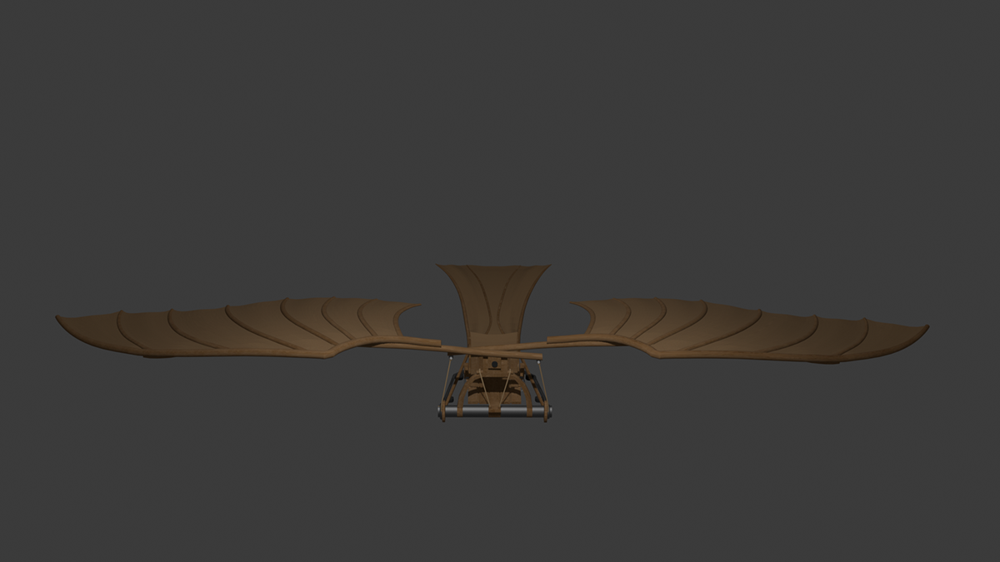
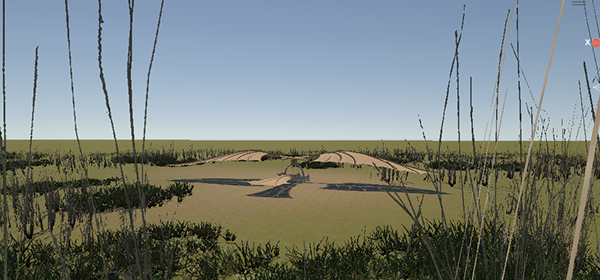
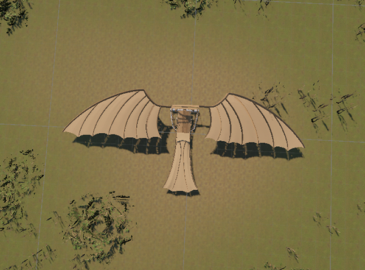
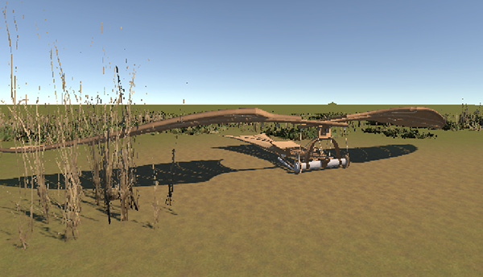
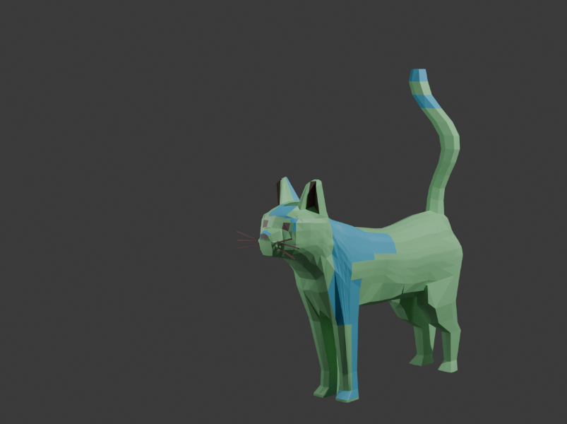
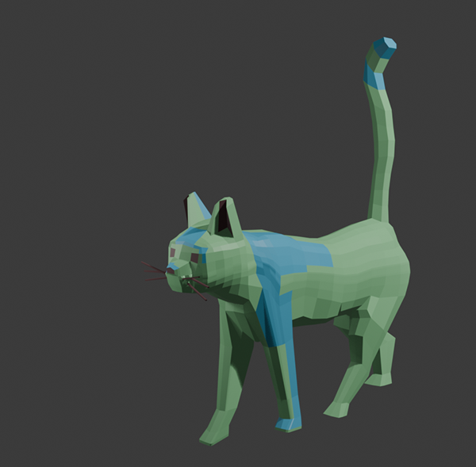
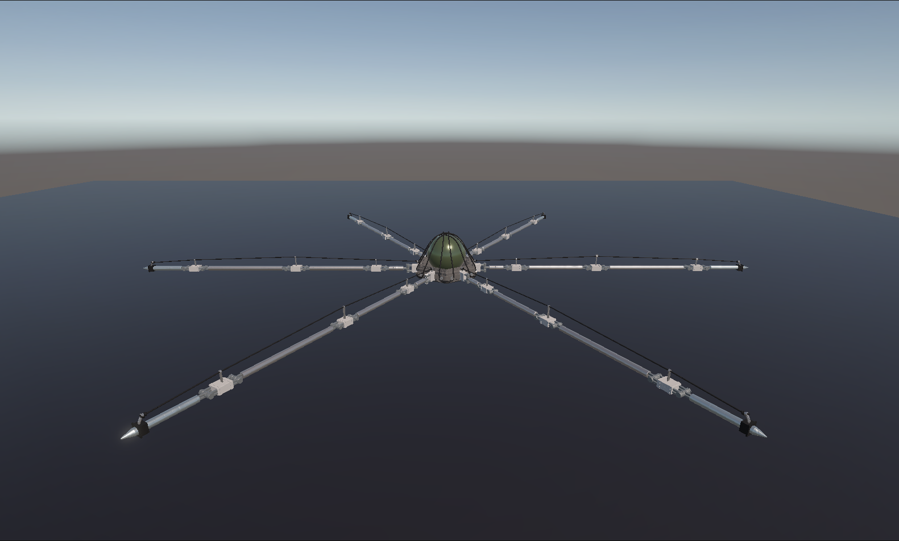

3D Modelling
A 3D Model of a Ornithopter
In module two (year one of Creative Technology), in the course Interactive Visualization, I explored 3D modelling in Blender and exporting the final model to unity to publish on the web. Below a render of the blender 3D model is shown. The following link is the web access of the unity version of the project, with a simple animation and game charcteristic: https://chjoh.itch.io/a2.

Below you can find some screenshots of the final unity project.



Below is the screen recording of the 3D modelling process.
A 3D Model of a Cat for Animation
For my Professional Development course in module two, year one of Creative Technology, I explored creating game characters in blender. More specifically, a game character ready for animation. Below, both photos of the end result and a video showcasing the process can be found.


Below you can find the screen recording of the process of creating the 3D model of a cat for animation.
A Walkable Mechanical Spider
During the second year of my studies at Creative Tecknology I followed the course; Advanced 3D Modeling and Animation. Here, one of my projects was to 3D model a mechanical spider and fix its skeleton so I could make it walk a walk cycle. For this project I followed a youtube tutorial by Polyfjord: https://www.youtube.com/watch?v=ktXD_WRMY8E.
Below you can find the walk cycle I animated and 3D modelled for.
Below is the textures attached to the 3D model in unity.

Below are the screen recording of the process of creating the 3D model.
Below are the screen recording of the process of animating the walk cycle.